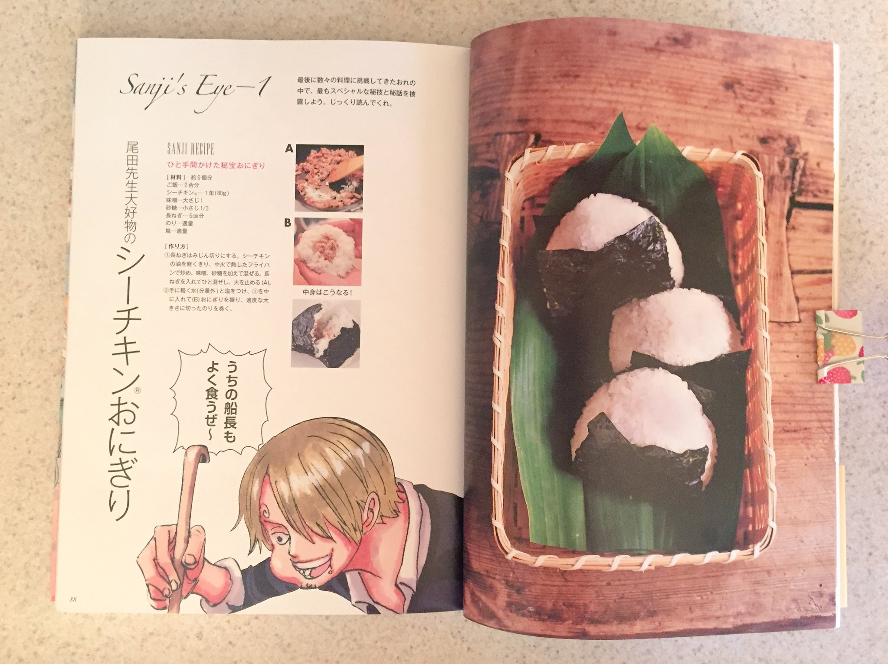

Oda Sensei's Favorite Sea Chicken Onigiri

ingredints
- 2 cups rice
- 80g can tuna
- 1 tbsp miso
- 1/3 sugar
- 5cm piece green onion
- nori as needed
- salt as nedded
How to make
- Finely chop the green onion
- Drain the tuna and put it in a frying pan over medium heat, along with the miso and sugar mix
- Add onion and mix
- Remove from heat (A).
- Dip hands in lightly salted water, grab a ball of rice and insert ingredients in the middle
- Close
- Shape into triangular onigiri form.
- Cut and attach nori as desired
return